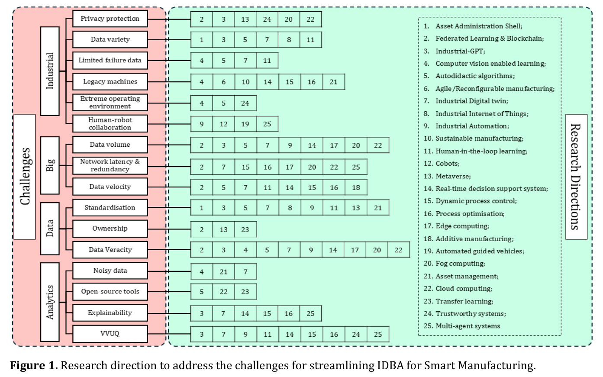

工业大数据分析
Streamlining Industrial Big Data Analytics for Smart Manufacturing
Vibhor Pandhare¹, Soumyabrata Bhattacharjee², Ram Mohan Tripathi²
¹ 印度孟买印度理工学院机械工程系
² 印度印多尔印度理工学院机械工程系
E-mail: vibhorpandhare@iitb.ac.in
工业大数据分析（IBDA）技术随之兴起，旨在从实时数据中提取洞察并改进制造决策。早期研究探索了IBDA在以下任务中的应用：为操作人员提供异常预警、预测维护需求、实现故障自动诊断、支持车间决策、优化性能以及推荐工艺改进措施[6]。
时至今日，工业大数据分析的需求比以往任何时候都更为迫切。98%的制造组织在从海量、异构的工业数据中提取可操作洞察方面面临困难[7]。仅在2024年，全球前500强企业的非计划停机损失便高达数万亿美元[8]。例如，生产线上约20%的非计划停机源于刀具磨损[9]。传统上，行业通常仅利用了刀具总寿命的50%至80%，造成了宝贵资源的浪费。此外，制造业占全球能源消耗的30%[11]，而设备故障将进一步推高这一比例。在加工过程中，实时检测刀具轨迹偏差也极为困难，这不仅增加了废品率，还损害了产品质量。其他挑战还包括：在资源不变的前提下，重新配置生产线和车间以满足日益增长的定制产品需求。
因此，制造业正大力投资数据驱动决策，以降低运营成本和碳排放，同时最大化资源利用率。在此背景下，IBDA的进一步发展对于智能制造（SM）中投资回报率（ROI）的最大化至关重要。例如，需要新的框架来快速处理大规模的异构数据流，以实现实时异常检测和自动化质量控制。IBDA还可用于优化刀具轨迹和机器参数，从而减少废品并提高质量。监测刀具和设备状态可通过预测性及规范性维护最大限度地降低非计划停机时间，进而减少制造业价值链中的碳排放和能源消耗。IBDA能够实现生产过程的动态重构，在资源有限的条件下满足定制产品日益增长的需求。
当前与未来的挑战
鉴于IBDA在智能制造中的关键作用，其发展所面临的挑战是多维度的。具体而言，IBDA的每一个要素都伴随着各自的挑战，如下所述：
工业层面： 在行业相关挑战中，隐私是知识产权保护中的一个突出问题。随着网络威胁日益增加[12]，存储和共享敏感数据存在泄露和未授权访问的风险，因此必须采取强有力的安全措施。来自不同来源的异构数据因格式和单位的差异而产生集成问题[13]。同一类型、同一状态的设备往往生成不一致的数据模式[14]。工业领域中故障事件有限，导致数据集不平衡，缺乏足够的故障数据来进行有效建模[15]。老旧设备接口陈旧，集成复杂[16]。许可限制阻碍了传感器的集成，进而限制了工业过程优化所需的数据收集与分析。即使部署了远程传感器和摄像头，湿度、温度、光照等环境因素也会影响其效能。移动工业机器人在动态环境中难以建立稳定的参考点，限制了自身的绘图能力，使得人机协作（HRC）存在安全隐患[17]。
大数据层面： 海量、异构的工业数据无处不在、不可或缺，这对存储和计算基础设施提出了严格要求。此外，还需要相关协议来优化网络冗余和延迟，以实现对高速到达数据的实时IBDA处理。
数据层面： 不仅数据格式存在差异，同一参数的数据单位也不统一，这使得集成和分析工作变得复杂，需要精细的标准化技术。当多个利益相关方（如制造商和第三方供应商）对数据权利提出主张时，便会产生数据所有权争议，引发法律和伦理困境。此外，在数据体量大、种类多、速度快的情况下，确保数据的真实性同样是一项挑战。
分析层面： IBDA中的一个关键挑战是从有噪声的数据集中进行特征学习，因为无关或损坏的数据会掩盖有意义的模式，需要先进的过滤和预处理技术。使用开源工具会引发知识产权和安全方面的担忧，使行业采用过程更加复杂[18]。可解释性仍是一大挑战，因为深度学习等复杂模型往往缺乏透明度，阻碍了用户信任的形成以及与监管要求的合规。验证、确认和不确定性量化（VVUQ）对于建立对所呈推荐结果的信任至关重要，但这项工作难度很大——在动态工业环境中确保模型准确性并量化不确定性需要严格的方法论。这些挑战阻碍了可靠、可扩展且值得信赖的分析能力的发展，迫切需要创新性解决方案来推动IBDA的进步。
应对挑战的科学技术进展
要应对这些挑战，需要在科学和技术层面进行系统化、流畅的推进，包括计算模型的无缝互操作性和情境感知适应性。隐私保护下的联邦学习技术也需要发展，需要可扩展的算法来处理异构数据，并建立针对对抗性攻击的强大防御体系。推动跨企业协作和针对边缘优化的框架，可以缩小实时模型同步中的通信延迟。虽然迁移学习可以将基于开源数据集构建的模型适配到特定行业的制造数据上，但保护组织的知识产权至关重要。
大语言模型可以在行业特定数据上进行再训练，以制造业术语回应查询。这可能催生工业GPT的开发，它能从异构数据中提供经过不确定性量化的建议，并将其易于传达给人类操作人员，防止决策瘫痪[19]。然而，在开发工业GPT时，必须极其谨慎地保护组织的知识产权。通过先进的研究方向同时应对多重挑战，以推动面向智能制造的工业大数据分析流畅化，其整体思路如图1所示。

计算机视觉系统也可以发展到能够在极端环境中有效运行的程度，包括在光照条件变化和遮挡的情况下无障碍运行。这使得系统能够独立学习工艺行为，从而减少对数据标注的依赖。此外，在工业场景中，系统生成的数据往往是无标注的。在这种情况下，企业可以采用自主学习型数字孪生（DT），具备实时、无监督、不确定性量化且可解释的决策能力。这些数字孪生可以使用IBDA动态监测和优化工艺参数，从而提高生产率、降低能耗并减少碳排放，以实现可持续制造。这些数字孪生还可以足够轻量化，以便在边缘设备而非仅在云端运行。确定每个系统级数字孪生的保真度和刷新率，有助于将其整合，从而在任何时刻对整个制造工厂获得洞察，进而为各系统进一步优化工艺参数。数字孪生还可与轻量化基于物理的模型相结合，以提高其在制造动态特性中的效能。
结语
智能制造以IBDA为核心，相较于传统做法具有显著优势，例如降低运营和维护成本、减少碳排放、提高产品质量和资源利用率。这一认识促使了该领域的更大投资。然而，最大化ROI需要克服如图1所示的特定挑战，解决这些挑战需要系统化、同步且多学科的研究方法。尽管应对所有这些挑战需要时间，但创新解决方案可能有助于弥合传统制造系统与现代制造系统之间的差距，使组织能够在最少干预的情况下开始获得智能制造的好处。同时必须指出，无论开发何种技术，保护组织的知识产权都至关重要。此外，在数据的体量、种类和速度都很高的情况下，除非确保数据的真实性，否则IBDA无法从工业数据中提取任何可操作的洞察。应对这些挑战将有助于推动海量异构工业数据的流畅整合，同时保护其知识产权，以提取可操作的洞察。这一路径将使组织能够最大限度地降低成本并最大化生产率。
参考文献
[1] Huylebrouck D 2008 The ISShango project Journal of Mathematics and the Arts 2 145–52
[3] Halevi G and Moed H 2012 The evolution of big data as a research and scientific topic: Overview of the literature Research Trends 1
[4] Vogel-Heuser B and Hess D 2016 Guest Editorial Industry 4.0–Prerequisites and Visions IEEE Transactions on Automation Science and Engineering 13 411–3
[5] Kelly J and Floyer D 2013 The industrial internet and big data analytics: Opportunities and challenges 2016-08-02]. http://wikibon. org/wiki/v/The_Industrial_Internet_ and_Big_Data_Analytics: _Opportunities_and_Challenges. Wikibon
[6] Nagorny K, Lima-Monteiro P, Barata J and Colombo A W 2017 Big Data Analysis in Smart Manufacturing: A Review Network and System Sciences 10 31–58
[7] Anon 2024 Advanced Manufacturing Report | Hexagon 6–7
[8] Akkerman F, Knofius N, van der Heijden M and Mes M 2025 Solving dual sourcing problems with supply mode dependent failure rates Int J Prod Res
[9] Zhang A, Ni J, Wei X, Su Y and Liu X 2024 A tool wear prediction method for free-form surface machining of ball-end mill J Manuf Process 130 87–101
[10] Chen N, Liu Z, Xue Z, He L, Zou Y, Chen M and Li L 2025 Intelligent wireless tool wear monitoring system based on chucked tool condition monitoring ring and deep learning Advanced Engineering Informatics 65 103176
[11] Keramati Feyz Abadi M M, Liu C, Zhang M, Hu Y and Xu Y 2025 Leveraging AI for energy-efficient manufacturing systems: Review and future prospectives J Manuf Syst 78 153–77
[12] Leng J, Li R, Xie J, Zhou X, Li X, Liu Q, Chen X, Shen W and Wang L 2025 Federated learning-empowered smart manufacturing and product lifecycle management: A review Advanced Engineering Informatics 65 103179
[13] Yang C, Yu H, Zheng Y, Feng L, Ala-Laurinaho R and Tammi K 2025 A digital twin-driven industrial context-aware system: A case study of overhead crane operation J Manuf Syst 78 394–409
[14] De Blasi S, Bahrami M, Engels E and Gepperth A 2024 Safe contextual Bayesian optimization integrated in industrial control for self-learning machines J Intell Manuf 35 885–903
[15] Altalhan M, Algarni A and Turki-Hadj Alouane M 2025 Imbalanced Data Problem in Machine Learning: A Review IEEE Access 13 13686–99
[16] Schlemitz A and Mezhuyev V 2024 Approaches for data collection and process standardization in smart manufacturing: Systematic literature review J Ind Inf Integr 38 100578
[17] Zheng C, Du Y, Xiao J, Sun T, Wang Z, Eynard B and Zhang Y 2025 Semantic map construction approach for human-robot collaborative manufacturing Robot Comput Integr Manuf 91 102845
[18] Gowripeddi V V, Sasirekha G V K, Bapat J and Das D 2023 Digital Twin and Ontology based DDoS Attack Detection in a Smart- Factory 4.0 5th International Conference on Artificial Intelligence in Information and Communication, ICAIIC 2023 286–91
[19] Sanchit, Bhattacharjee S and Pandhare V 2024 Deriving inferences through natural language from structured datasets for asset lifecycle management IFAC-PapersOnLine 58 145–50 Journal XX (XXXX) XXXXXX A Author et al 26 Advanced Sensing, Perception, and Analytics for Manufacturing Lingbao Kong, Qiyuan Wang and Xinlan Tang Future Information Innovative College, Fudan University, Shanghai, China E-mail: LKong@fudan.edu.cn Status Against the backdrop of the ongoing wave of Industry 5.0, intelligent manufacturing has emerged as a cutting-edge focal point within the realm of industrial manufacturing
[1] . In this context, sensing technology, serving as the pivotal bridge linking the physical world to digital signal systems, is undergoing a profound transformation from traditional to intelligent paradigms. In the current era dominated by multi-domain manufacturing, traditional unimodal sensing technologies face significant limitations due to their single information dimension, weak anti-interference capability, and high calibration and maintenance costs. Correspondingly, as shown in Fig. 1, multimodal sensing technologies, which offer rich information, robust redundancy for anti-interference, and low calibration and maintenance expenses, are gradually displacing unimodal sensing technologies across a variety of complex or dynamic scenarios. This transition effectively circumvents the challenges encountered by unimodal sensing in new industrial environments
[2] , while being better aligned with the urgent demands of modern advanced manufacturing. In comparison to unimodal sensing, multimodal sensing technology has achieved significant breakthroughs primarily in three key aspects. The first lies in the comprehensive enhancement of perceptual capabilities. By leveraging diverse sensing detectors, multimodal sensing facilitates cross-modal information complementarity. For instance, as Fig. 1, in the inspection of surface scratches or coating defects on automotive components, integrating multiple sensing modalities such as industrial cameras, 3D laser scanners, and infrared thermal imagers can elevate the defect detection rate from 90% to 99.5%, while concurrently reducing the false alarm rate by 60%
[3] . The second breakthrough is the marked improvement in robustness and anti-interference capabilities. In robotic object grasping scenarios, even when visual occlusion or blind spots occur, robots can dynamically adjust their actions through tactile and force feedback
[4] . This adaptability ensures task continuity and accuracy despite environmental perturbations. The third aspect centers on innovations in intelligence and system integration. On one hand, cross-modal semantic alignment is realized through multimodal deep learning, with the incorporation of self-supervised mechanisms to reduce reliance on labeled data. For example, in video data processing, visual, auditory, and motion information are automatically correlated, thereby augmenting the model's generalization capacity
[5] . On the other hand, edge computing is employed for real-time processing in system integration, mitigating dependence on cloud-based infrastructure. In intelligent logistics, leveraging AGV (Automated Guided Vehicle) navigation and obstacle avoidance technologies, obstacle response times can be minimized to as low as 100 milliseconds
[6] .